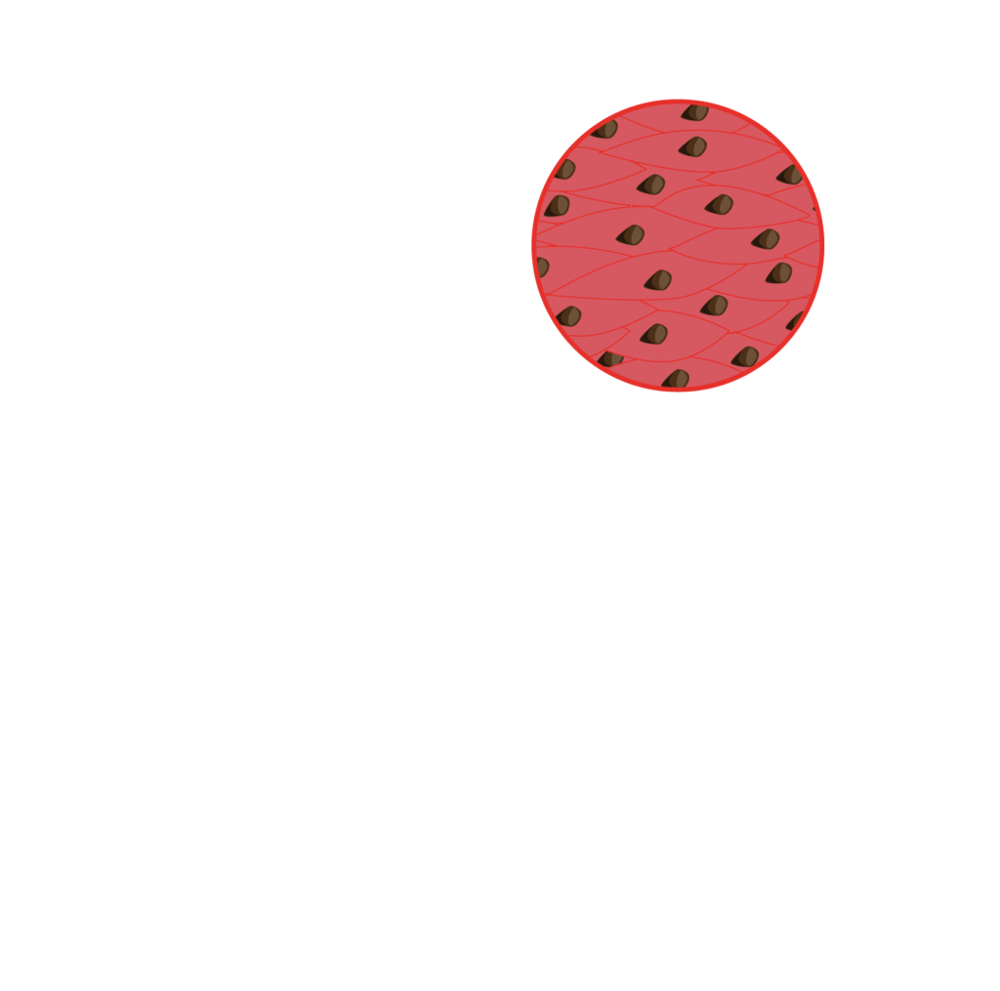
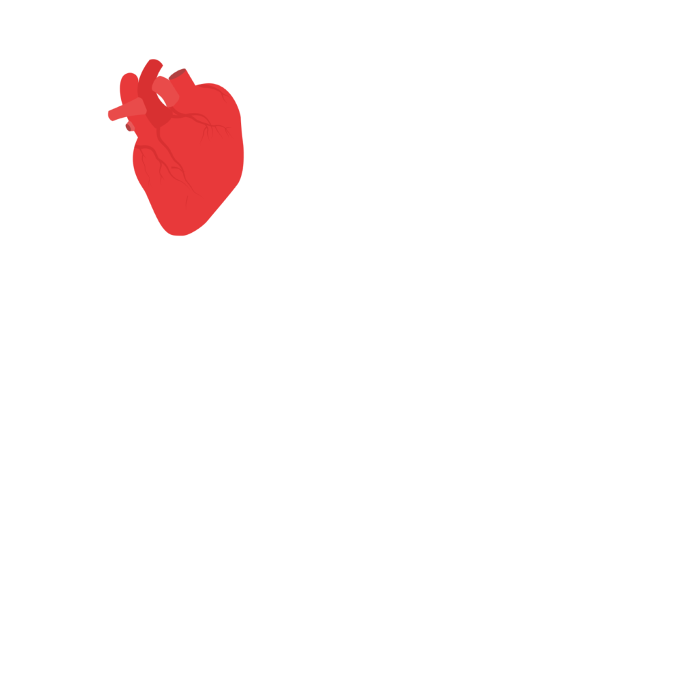
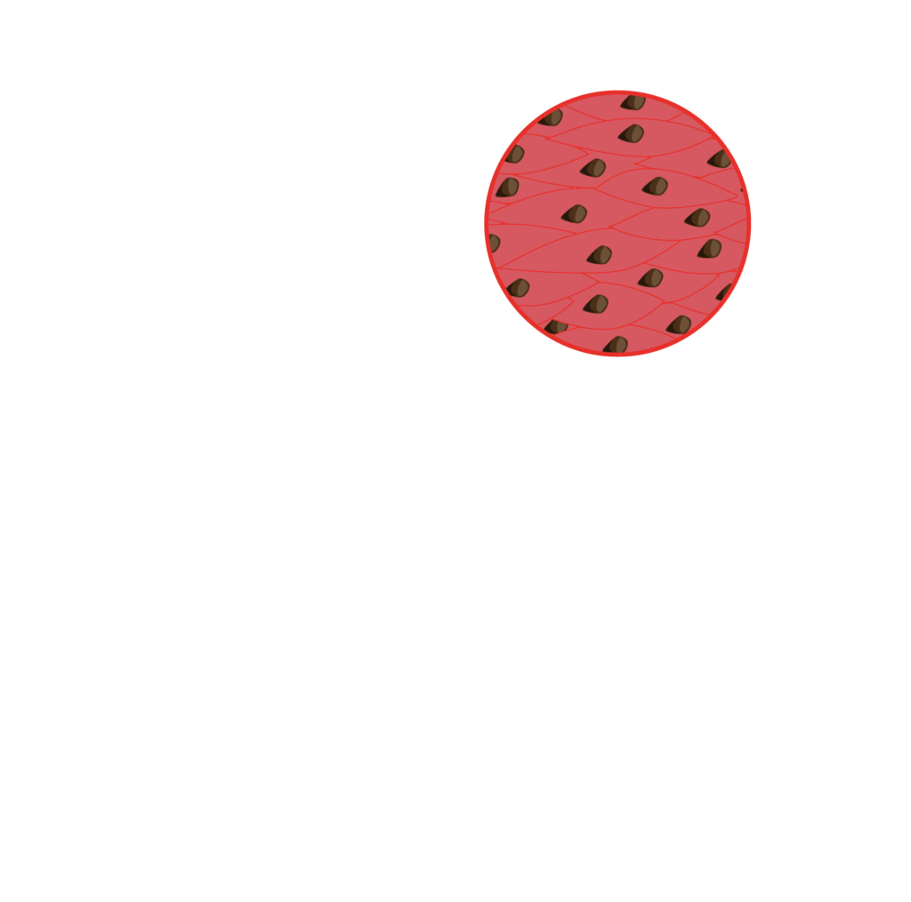
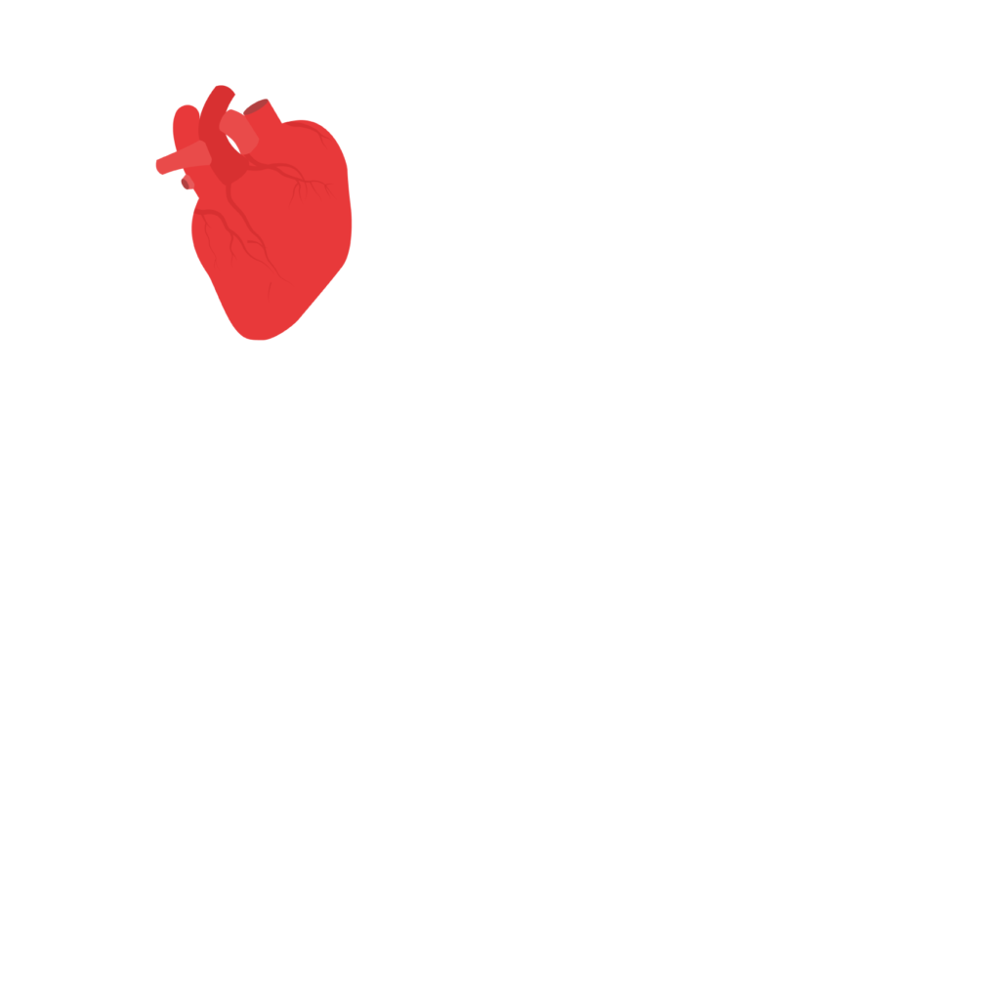

The human body is made up of a number of components and systems that function both separately and together to give us life. The basic building blocks of the human body are microscopic units called cells. Cells group together to form tissues, which then group together to form body parts and organs. Body parts and organs group together to form entire organisms, such as humans. In this section, we’ll look at these basic components of the human body:
- cells
- tissues
- organs.
 


